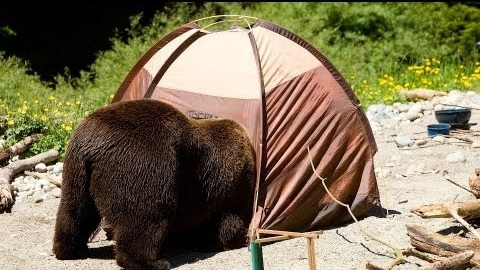
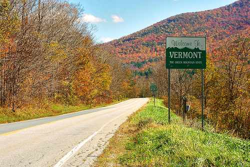
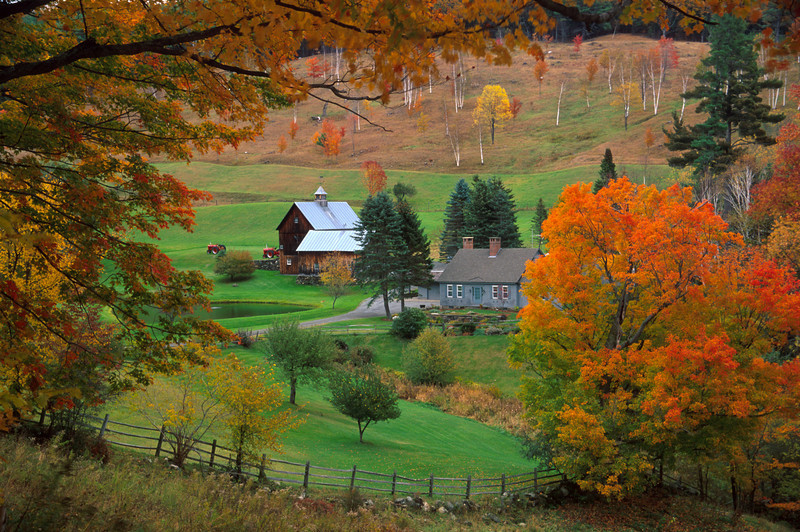
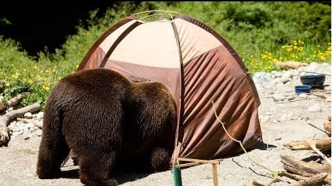
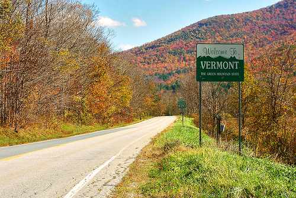
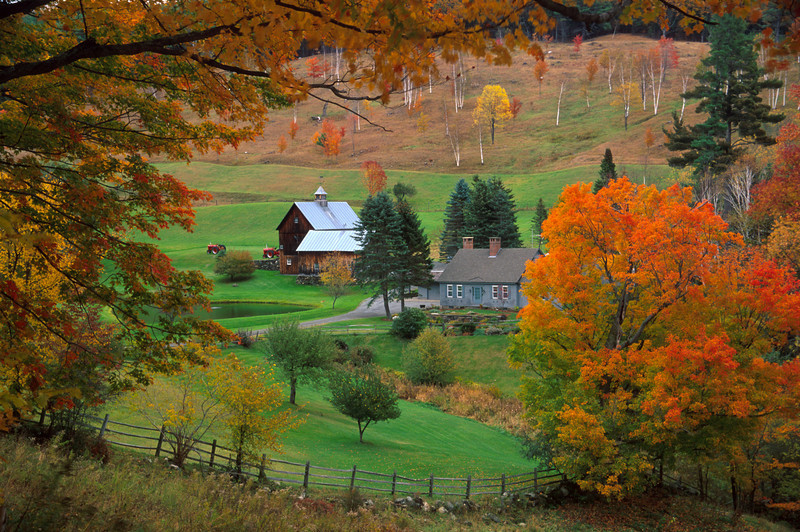

Vermont
 





Vermont is a state in the northeastern U.S. known for its natural landscape, which is 75% forest. It's also known for being home to over 100 19th-century covered bridges, and as a major producer of maple syrup. Thousands of acres of alpine terrain make it a popular New England winter destination for skiers and snowboarders.
Vermont consistently ranks as one of the top places to live, work, and vacation, and Vermont.com is your guide to everything in the state of Vermont. Visitors can find a variety of places to stay in Vermont, from upscale Burlington hotels, to quaint bed and breakfasts and Vermont inns, to budget friendly motels. Vermont’s natural beauty, range of venues, and short distance to Boston, New York, and Montreal, make Vermont weddings ideal.